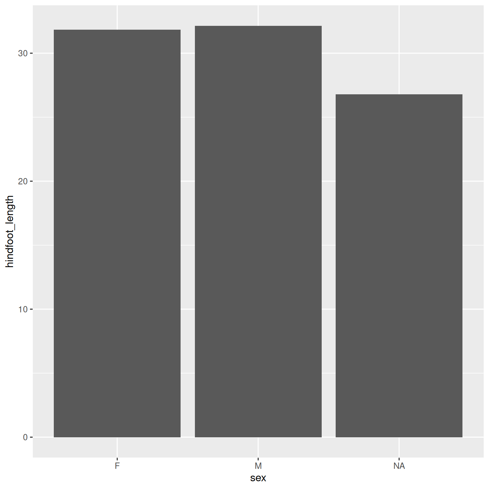
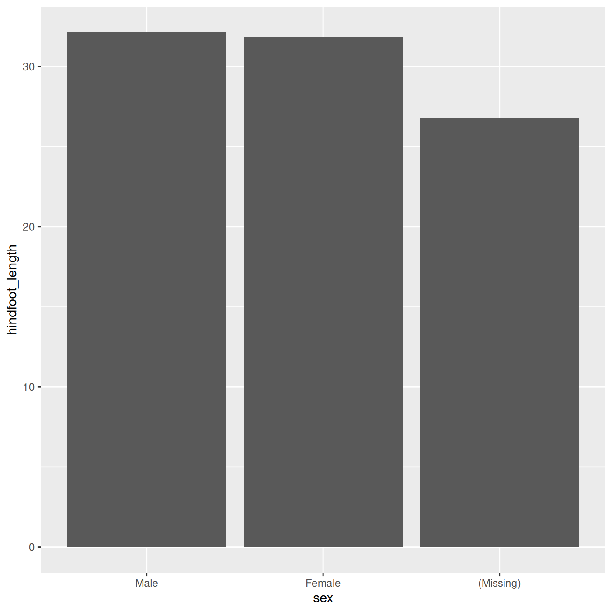

Exploring and understanding data
Last updated on 2026-11-05 | Edit this page
Overview
Questions
- How does R store and represent data?
Objectives
- Explore the structure and content of data.frames
- Understand vector types and missing data
- Create and convert factors
- Understand how R assigns values to objects
- Use the RStudio help interface to get help with R functions
- Be able to format questions to get help in the broader R community
Setup
R
library(tidyverse)
library(ratdat)
The data.frame
We just spent quite a bit of time learning how to create
visualizations from the complete_old data, but we did not
talk much about what this complete_old
thing is. It’s important to understand how R thinks about, represents,
and stores data in order for us to have a productive working
relationship with R.
The complete_old data is stored in R as a
data.frame, which is the most common way that R
represents tabular data (data that can be stored in a table format, like
a spreadsheet). We can check what complete_old is by using
the class() function:
R
class(complete_old)
OUTPUT
[1] "tbl_df" "tbl" "data.frame"We can view the first few rows with the head() function,
and the last few rows with the tail() function:
R
head(complete_old)
OUTPUT
# A tibble: 6 × 13
record_id month day year plot_id species_id sex hindfoot_length weight
<int> <int> <int> <int> <int> <chr> <chr> <int> <int>
1 1 7 16 1977 2 NL M 32 NA
2 2 7 16 1977 3 NL M 33 NA
3 3 7 16 1977 2 DM F 37 NA
4 4 7 16 1977 7 DM M 36 NA
5 5 7 16 1977 3 DM M 35 NA
6 6 7 16 1977 1 PF M 14 NA
# ℹ 4 more variables: genus <chr>, species <chr>, taxa <chr>, plot_type <chr>R
tail(complete_old)
OUTPUT
# A tibble: 6 × 13
record_id month day year plot_id species_id sex hindfoot_length weight
<int> <int> <int> <int> <int> <chr> <chr> <int> <int>
1 16873 12 5 1989 8 DO M 37 51
2 16874 12 5 1989 16 RM F 18 15
3 16875 12 5 1989 5 RM M 17 9
4 16876 12 5 1989 4 DM M 37 31
5 16877 12 5 1989 11 DM M 37 50
6 16878 12 5 1989 8 DM F 37 42
# ℹ 4 more variables: genus <chr>, species <chr>, taxa <chr>, plot_type <chr>We used these functions with just one argument, the object
complete_old, and we didn’t give the argument a name, like
we often did with ggplot2. In R, a function’s arguments
come in a particular order, and if you put them in the correct order,
you don’t need to name them. In this case, the name of the argument is
x, so we can name it if we want, but since we know it’s the
first argument, we don’t need to.
Some arguments are optional. For example, the n argument
in head() specifies the number of rows to print. It
defaults to 6, but we can override that by specifying a different
number:
R
head(complete_old, n = 10)
OUTPUT
# A tibble: 10 × 13
record_id month day year plot_id species_id sex hindfoot_length weight
<int> <int> <int> <int> <int> <chr> <chr> <int> <int>
1 1 7 16 1977 2 NL M 32 NA
2 2 7 16 1977 3 NL M 33 NA
3 3 7 16 1977 2 DM F 37 NA
4 4 7 16 1977 7 DM M 36 NA
5 5 7 16 1977 3 DM M 35 NA
6 6 7 16 1977 1 PF M 14 NA
7 7 7 16 1977 2 PE F NA NA
8 8 7 16 1977 1 DM M 37 NA
9 9 7 16 1977 1 DM F 34 NA
10 10 7 16 1977 6 PF F 20 NA
# ℹ 4 more variables: genus <chr>, species <chr>, taxa <chr>, plot_type <chr>If we order them correctly, we don’t have to name either:
R
head(complete_old, 10)
OUTPUT
# A tibble: 10 × 13
record_id month day year plot_id species_id sex hindfoot_length weight
<int> <int> <int> <int> <int> <chr> <chr> <int> <int>
1 1 7 16 1977 2 NL M 32 NA
2 2 7 16 1977 3 NL M 33 NA
3 3 7 16 1977 2 DM F 37 NA
4 4 7 16 1977 7 DM M 36 NA
5 5 7 16 1977 3 DM M 35 NA
6 6 7 16 1977 1 PF M 14 NA
7 7 7 16 1977 2 PE F NA NA
8 8 7 16 1977 1 DM M 37 NA
9 9 7 16 1977 1 DM F 34 NA
10 10 7 16 1977 6 PF F 20 NA
# ℹ 4 more variables: genus <chr>, species <chr>, taxa <chr>, plot_type <chr>Additionally, if we name them, we can put them in any order we want:
R
head(n = 10, x = complete_old)
OUTPUT
# A tibble: 10 × 13
record_id month day year plot_id species_id sex hindfoot_length weight
<int> <int> <int> <int> <int> <chr> <chr> <int> <int>
1 1 7 16 1977 2 NL M 32 NA
2 2 7 16 1977 3 NL M 33 NA
3 3 7 16 1977 2 DM F 37 NA
4 4 7 16 1977 7 DM M 36 NA
5 5 7 16 1977 3 DM M 35 NA
6 6 7 16 1977 1 PF M 14 NA
7 7 7 16 1977 2 PE F NA NA
8 8 7 16 1977 1 DM M 37 NA
9 9 7 16 1977 1 DM F 34 NA
10 10 7 16 1977 6 PF F 20 NA
# ℹ 4 more variables: genus <chr>, species <chr>, taxa <chr>, plot_type <chr>Generally, it’s good practice to start with the required arguments, like the data.frame whose rows you want to see, and then to name the optional arguments. If you are ever unsure, it never hurts to explicitly name an argument.
Aside: Getting Help
To learn more about a function, you can type a ? in
front of the name of the function, which will bring up the official
documentation for that function:
R
?head
Function documentation is written by the authors of the functions, so they can vary pretty widely in their style and readability. The first section, Description, gives you a concise description of what the function does, but it may not always be enough. The Arguments section defines all the arguments for the function and is usually worth reading thoroughly. Finally, the Examples section at the end will often have some helpful examples that you can run to get a sense of what the function is doing.
Another great source of information is package
vignettes. Many packages have vignettes, which are like
tutorials that introduce the package, specific functions, or general
methods. You can run vignette(package = "package_name") to
see a list of vignettes in that package. Once you have a name, you can
run vignette("vignette_name", "package_name") to view that
vignette. You can also use a web browser to go to
https://cran.r-project.org/web/packages/package_name/vignettes/
where you will find a list of links to each vignette. Some packages will
have their own websites, which often have nicely formatted vignettes and
tutorials.
Finally, learning to search for help is probably the most useful
skill for any R user. The key skill is figuring out what you should
actually search for. It’s often a good idea to start your search with
R or R programming. If you have the name of a
package you want to use, start with R package_name.
Many of the answers you find will be from a website called Stack
Overflow, where people ask programming questions and others provide
answers. It is generally poor form to ask duplicate questions, so before
you decide to post your own, do some thorough searching to see if it has
been answered before (it likely has). If you do decide to post a
question on Stack Overflow, or any other help forum, you will want to
create a reproducible example or
reprex. If you are asking a complicated question
requiring your own data and a whole bunch of code, people probably won’t
be able or willing to help you. However, if you can hone in on the
specific thing you want help with, and create a minimal example using
smaller, fake data, it will be much easier for others to help you. If
you search how to make a reproducible example in R, you
will find some great resources to help you out.
Generative AI Help
In addition to the resources we’ve already mentioned for getting help with R, it’s becoming increasingly common to turn to generative AI chatbots such as ChatGPT to get help while coding. You will probably receive some useful guidance by presenting your error message to the chatbot and asking it what went wrong.
However, the way this help is provided by the chatbot is different. Answers on Stack Overflow have (probably) been given by a human as a direct response to the question asked. But generative AI chatbots, which are based on an advanced statistical model, respond by generating the most likely sequence of text that would follow the prompt they are given.
While responses from generative AI tools can often be helpful, they are not always reliable. These tools sometimes generate plausible but incorrect or misleading information, so (just as with an answer found on the internet) it is essential to verify their accuracy. You need the knowledge and skills to be able to understand these responses, to judge whether or not they are accurate, and to fix any errors in the code it offers you.
In addition to asking for help, programmers can use generative AI tools to generate code from scratch; extend, improve and reorganise existing code; translate code between programming languages; figure out what terms to use in a search of the internet; and more. However, there are drawbacks that you should be aware of.
The models used by these tools have been “trained” on very large volumes of data, much of it taken from the internet, and the responses they produce reflect that training data, and may recapitulate its inaccuracies or biases. The environmental costs (energy and water use) of LLMs are a lot higher than other technologies, both during development (known as training) and when an individual user uses one (also called inference). For more information see the AI Environmental Impact Primer developed by researchers at HuggingFace, an AI hosting platform. Concerns also exist about the way the data for this training was obtained, with questions raised about whether the people developing the LLMs had permission to use it. Other ethical concerns have also been raised, such as reports that workers were exploited during the training process.
We recommend that you avoid getting help from generative AI during the workshop for several reasons:
- For most problems you will encounter at this stage, help and answers can be found among the first results returned by searching the internet.
- The foundational knowledge and skills you will learn in this lesson by writing and fixing your own programs are essential to be able to evaluate the correctness and safety of any code you receive from online help or a generative AI chatbot. If you choose to use these tools in the future, the expertise you gain from learning and practising these fundamentals on your own will help you use them more effectively.
- As you start out with programming, the mistakes you make will be the kinds that have also been made – and overcome! – by everybody else who learned to program before you. Since these mistakes and the questions you are likely to have at this stage are common, they are also better represented than other, more specialised problems and tasks in the data that was used to train generative AI tools. This means that a generative AI chatbot is more likely to produce accurate responses to questions that novices ask, which could give you a false impression of how reliable they will be when you are ready to do things that are more advanced.
Knowing more about our data.frame
Let’s get back to investigating our complete_old
data.frame. We can get some useful summaries of each variable using the
summary() function:
R
summary(complete_old)
OUTPUT
record_id month day year plot_id
Min. : 1 Min. : 1.000 Min. : 1.0 Min. :1977 Min. : 1.00
1st Qu.: 4220 1st Qu.: 3.000 1st Qu.: 9.0 1st Qu.:1981 1st Qu.: 5.00
Median : 8440 Median : 6.000 Median :15.0 Median :1983 Median :11.00
Mean : 8440 Mean : 6.382 Mean :15.6 Mean :1984 Mean :11.47
3rd Qu.:12659 3rd Qu.: 9.000 3rd Qu.:23.0 3rd Qu.:1987 3rd Qu.:17.00
Max. :16878 Max. :12.000 Max. :31.0 Max. :1989 Max. :24.00
species_id sex hindfoot_length weight
Length :16878 Length :16878 Min. : 6.00 Min. : 4.00
N.unique : 36 N.unique : 3 1st Qu.:21.00 1st Qu.: 24.00
N.blank : 357 N.blank : 1300 Median :35.00 Median : 42.00
Min.nchar: 0 Min.nchar: 0 Mean :31.98 Mean : 53.22
Max.nchar: 2 Max.nchar: 1 3rd Qu.:37.00 3rd Qu.: 53.00
Max. :70.00 Max. :278.00
NAs :2733 NAs :1692
genus species taxa plot_type
Length :16878 Length :16878 Length :16878 Length :16878
N.unique : 23 N.unique : 30 N.unique : 4 N.unique : 5
N.blank : 0 N.blank : 0 N.blank : 0 N.blank : 0
Min.nchar: 6 Min.nchar: 3 Min.nchar: 4 Min.nchar: 7
Max.nchar: 16 Max.nchar: 15 Max.nchar: 7 Max.nchar: 25
NAs : 357 NAs : 357 NAs : 357
And, as we have already done, we can use str() to look
at the structure of an object:
R
str(complete_old)
OUTPUT
tibble [16,878 × 13] (S3: tbl_df/tbl/data.frame)
$ record_id : int [1:16878] 1 2 3 4 5 6 7 8 9 10 ...
$ month : int [1:16878] 7 7 7 7 7 7 7 7 7 7 ...
$ day : int [1:16878] 16 16 16 16 16 16 16 16 16 16 ...
$ year : int [1:16878] 1977 1977 1977 1977 1977 1977 1977 1977 1977 1977 ...
$ plot_id : int [1:16878] 2 3 2 7 3 1 2 1 1 6 ...
$ species_id : chr [1:16878] "NL" "NL" "DM" "DM" ...
$ sex : chr [1:16878] "M" "M" "F" "M" ...
$ hindfoot_length: int [1:16878] 32 33 37 36 35 14 NA 37 34 20 ...
$ weight : int [1:16878] NA NA NA NA NA NA NA NA NA NA ...
$ genus : chr [1:16878] "Neotoma" "Neotoma" "Dipodomys" "Dipodomys" ...
$ species : chr [1:16878] "albigula" "albigula" "merriami" "merriami" ...
$ taxa : chr [1:16878] "Rodent" "Rodent" "Rodent" "Rodent" ...
$ plot_type : chr [1:16878] "Control" "Long-term Krat Exclosure" "Control" "Rodent Exclosure" ...We get quite a bit of useful information here. First, we are told that we have a data.frame of 16878 observations, or rows, and 13 variables, or columns.
Next, we get a bit of information on each variable, including its
type (int or chr) and a quick peek at the
first 10 values. You might ask why there is a $ in front of
each variable. This is because the $ is an operator that
allows us to select individual columns from a data.frame.
The $ operator also allows you to use tab-completion to
quickly select which variable you want from a given data.frame. For
example, to get the year variable, we can type
complete_old$ and then hit Tab. We get a list of
the variables that we can move through with up and down arrow keys. Hit
Enter when you reach year, which should finish
this code:
R
complete_old$year
OUTPUT
[1] 1977 1977 1977 1977 1977 1977 1977 1977 1977 1977 1977 1977 1977 1977 1977
[16] 1977 1977 1977 1977 1977 1977 1977 1977 1977 1977 1977 1977 1977 1977 1977
[31] 1977 1977 1977 1977 1977 1977 1977 1977 1977 1977 1977 1977 1977 1977 1977
[46] 1977 1977 1977 1977 1977 1977 1977 1977 1977 1977 1977 1977 1977 1977 1977
[61] 1977 1977 1977 1977 1977 1977 1977 1977 1977 1977 1977 1977 1977 1977 1977
[76] 1977 1977 1977 1977 1977 1977 1977 1977 1977 1977 1977 1977 1977 1977 1977
[91] 1977 1977 1977 1977 1977 1977 1977 1977 1977 1977
[ reached 'max' / getOption("max.print") -- omitted 16778 entries ]What we get back is a whole bunch of numbers, the entries in the
year column printed out in order.
Importing data
Up until this point, we have been working with the
complete_old dataframe contained in the ratdat
package. However, you typically won’t access data from an R package; it
is much more common to access data files stored somewhere on your
computer. We are now going to start using the data in our
cleaned directory inside the data directory
that you downloaded at the beginning of the lesson (instructions
here). This file is called
surveys_complete_77_89.csv.
File paths
When we reference other files from an R script, we need to give R
precise instructions on where those files are. We do that using
something called a file path. It looks something like
this: "Documents/Manuscripts/Chapter_2.txt". This path
would tell your computer how to get from whatever folder contains the
Documents folder all the way to the .txt
file.
There are two kinds of paths: absolute and
relative. Absolute paths are specific to a particular
computer, whereas relative paths are relative to a certain folder.
Because we are keeping all of our work in the
R-Ecology-Workshop folder, all of our paths can be relative
to this folder.
Now, let’s read our CSV file into R and store it in an object named
surveys. We will use the read_csv function
from the tidyverse’s readr package, and the
argument we give will be the relative path to the CSV
file.
R
surveys <- read_csv("data/cleaned/surveys_complete_77_89.csv")
OUTPUT
Rows: 16878 Columns: 13
── Column specification ────────────────────────────────────────────────────────
Delimiter: ","
chr (6): species_id, sex, genus, species, taxa, plot_type
dbl (7): record_id, month, day, year, plot_id, hindfoot_length, weight
ℹ Use `spec()` to retrieve the full column specification for this data.
ℹ Specify the column types or set `show_col_types = FALSE` to quiet this message.Typing out paths can be error prone, so we can utilize a keyboard
shortcut. Inside the parentheses of read_csv(), type out a
pair of quotes and put your cursor between them. Then hit
Tab. A small menu showing your folders and files should show
up. You can use the ↑ and ↓ keys to move through
the options, or start typing to narrow them down. You can hit
Enter to select a file or folder, and hit Tab
again to continue building the file path. This might take a bit of
getting used to, but once you get the hang of it, it will speed up
writing file paths and reduce the number of mistakes you make.
You may have noticed a bit of feedback from R when you ran the last line of code. We got some useful information about the CSV file we read in. We can see:
- the number of rows and columns
- the delimiter of the file, which is how values are
separated, a comma
"," - a set of columns that were parsed as various vector
types
- the file has 6 character columns and 7 numeric columns
- we can see the names of the columns for each type
When working with the output of a new function, it’s often a good
idea to check the class():
R
class(surveys)
OUTPUT
[1] "spec_tbl_df" "tbl_df" "tbl" "data.frame" Whoa! What is this thing? It has multiple classes? Well, it’s called
a tibble, and it is the tidyverse version of a
data.frame. It is a data.frame, but with some added perks. It
prints out a little more nicely, it highlights NA values
and negative values in red, and it will generally communicate with you
more (in terms of warnings and errors, which is a good thing).
tidyverse vs. base R
As we begin to delve more deeply into the tidyverse, we
should briefly pause to mention some of the reasons for focusing on the
tidyverse set of tools. In R, there are often many ways to
get a job done, and there are other approaches that can accomplish tasks
similar to the tidyverse.
The phrase base R is used to refer to approaches
that utilize functions contained in R’s default packages. We have
already used some base R functions, such as str(),
head(), and mean(), and we will be using more
scattered throughout this lesson. However, there are some key base R
approaches we will not be teaching. These include square bracket
subsetting and base plotting. You may come across code written by other
people that looks like surveys[1:10, 2] or
plot(surveys$weight, surveys$hindfoot_length), which are
base R commands. If you’re interested in learning more about these
approaches, you can check out other Carpentries lessons like the Software
Carpentry Programming with R lesson.
We choose to teach the tidyverse set of packages because
they share a similar syntax and philosophy, making them consistent and
producing highly readable code. They are also very flexible and
powerful, with a growing number of packages designed according to
similar principles and to work well with the rest of the packages. The
tidyverse packages tend to have very clear documentation
and wide array of learning materials that tend to be written with novice
users in mind. Finally, the tidyverse has only continued to
grow, and has strong support from RStudio, which implies that these
approaches will be relevant into the future.
Vectors: the building block of data
You might have noticed that our last result looked different from
when we printed out the complete_old data.frame itself.
That’s because it is not a data.frame, it is a vector.
A vector is a 1-dimensional series of values, in this case a vector of
numbers representing years.
Data.frames are made up of vectors; each column in a data.frame is a vector. Vectors are the basic building blocks of all data in R. Basically, everything in R is a vector, a bunch of vectors stitched together in some way, or a function. Understanding how vectors work is crucial to understanding how R treats data, so we will spend some time learning about them.
There are 4 main types of vectors (also known as atomic vectors):
"character"for strings of characters, like ourgenusorsexcolumns. Each entry in a character vector is wrapped in quotes. In other programming languages, this type of data may be referred to as “strings”."integer"for integers. All the numeric values incomplete_oldare integers. You may sometimes see integers represented like2Lor20L. TheLindicates to R that it is an integer, instead of the next data type,"numeric"."numeric", aka"double", vectors can contain numbers including decimals. Other languages may refer to these as “float” or “floating point” numbers."logical"forTRUEandFALSE, which can also be represented asTandF. In other contexts, these may be referred to as “Boolean” data.
Vectors can only be of a single type. Since each
column in a data.frame is a vector, this means an accidental character
following a number, like 29, can change the type of the
whole vector. Mixing up vector types is one of the most common mistakes
in R, and it can be tricky to figure out. It’s often very useful to
check the types of vectors.
To continue the example we have been using, let’s say we collected the weight and sex of five additional samples in our study, and we will be writing the data into R manually.
We can create a vector from scratch with the weights, as for this we
can use the c() function, putting values inside, separated
by commas.
R
c(10, 62, 53, 12, 45)
OUTPUT
[1] 10 62 53 12 45As you can see, those values get printed out in the console, just
like with complete_old$year or surveys$year.
To store this vector so we can continue to work with it, we need to
assign it to an object.
R
wt <- c(10, 62, 53, 12, 45)
You can check what kind of object wt is with the
class() function.
R
class(wt)
OUTPUT
[1] "numeric"We see that wt is a numeric vector.
Let’s try making a character vector for the sex data:
R
sex <- c("F", "M", "F", "F", "M")
class(sex)
OUTPUT
[1] "character"Remember that each entry, like "F", needs to be
surrounded by quotes, and entries are separated with commas. If you do
something like "F, F, M", you will have only a single entry
containing that whole string.
To demonstrate a logical type of vector, let’s say we want a vector that says if the animals sampled weigh more than 50 grams:
R
is_heavy <- c(FALSE, TRUE, TRUE, FALSE, FALSE)
class(is_heavy)
OUTPUT
[1] "logical"Challenge 1: Coercion
Since vectors can only hold one type of data, something has to be done when we try to combine different types of data into one vector.
- What type will each of these vectors be? Try to guess without
running any code at first, then run the code and use
class()to verify your answers.
R
wt_mistake <- c(1, 4, "6F", 9)
num_logi <- c(1, 4, 6, TRUE)
num_char <- c(1, 3, "10", 6)
char_logi <- c("a", "b", TRUE)
tricky <- c("a", "b", "1", FALSE)
R
class(wt_mistake)
OUTPUT
[1] "character"R
class(num_logi)
OUTPUT
[1] "numeric"R
class(num_char)
OUTPUT
[1] "character"R
class(char_logi)
OUTPUT
[1] "character"R
class(tricky)
OUTPUT
[1] "character"R will automatically convert values in a vector so that they are all the same type, a process called coercion.
Challenge 1: Coercion (continued)
- How many values in
combined_logicalare"TRUE"(as a character)?
R
combined_logical <- c(num_logi, char_logi)
R
combined_logical
OUTPUT
[1] "1" "4" "6" "1" "a" "b" "TRUE"R
class(combined_logical)
OUTPUT
[1] "character"Only one value is "TRUE". Coercion happens when each
vector is created, so the TRUE in num_logi
becomes a 1, while the TRUE in
char_logi becomes "TRUE". When these two
vectors are combined, R doesn’t remember that the 1 in
num_logi used to be a TRUE, it will just
coerce the 1 to "1".
Challenge 1: Coercion (continued)
- Now that you’ve seen a few examples of coercion, you might have started to see that there are some rules about how types get converted. There is a hierarchy to coercion. Can you draw a diagram that represents the hierarchy of what types get converted to other types?
logical → integer → numeric → character
Logical vectors can only take on two values: TRUE or
FALSE. Integer vectors can only contain integers, so
TRUE and FALSE can be coerced to
1 and 0. Numeric vectors can contain numbers
with decimals, so integers can be coerced from, say, 6 to
6.0 (though R will still display a numeric 6
as 6.). Finally, any string of characters can be
represented as a character vector, so any of the other types can be
coerced to a character vector.
Coercion is not something you will often do intentionally; rather,
when combining vectors or reading data into R, a stray character that
you missed may change an entire numeric vector into a character vector.
It is a good idea to check the class() of your results
frequently, particularly if you are running into confusing error
messages.
Missing data
One of the great things about R is how it handles missing data, which
can be tricky in other programming languages. R represents missing data
as NA, without quotes, in vectors of any type. Let’s make a
numeric vector with an NA value:
R
wt <- c(25, 34, 12, NA, 42)
R doesn’t make assumptions about how you want to handle missing data,
so if we pass this vector to a numeric function like min(),
it won’t know what to do, so it returns NA:
R
min(wt)
OUTPUT
[1] NAThis is a very good thing, since we won’t accidentally forget to consider our missing data. If we decide to exclude our missing values, many basic math functions have an argument to remove them:
R
min(wt, na.rm = TRUE)
OUTPUT
[1] 12Building with vectors
We have now seen vectors in a few different forms: as columns in a data.frame and as single vectors. However, they can be manipulated into lots of other shapes and forms. Some other common forms are:
- matrices
- 2-dimensional numeric representations
- arrays
- many-dimensional numeric
- lists
- lists are very flexible ways to store vectors
- a list can contain vectors of many different types and lengths
- an entry in a list can be another list, so lists can get deeply nested
- a data.frame is a type of list where each column is an individual vector and each vector has to be the same length, since a data.frame has an entry in every column for each row
- factors
- a way to represent categorical data
- factors can be ordered or unordered
- they often look like character vectors, but behave differently
- under the hood, they are integers with character labels, called levels, for each integer
Factors
We will spend a bit more time talking about factors, since they are often a challenging type of data to work with.
To give a practical example of how this is useful, let’s say we want to customize a plot that shows the average hind foot lenght per sex:
R
ggplot(data = surveys, mapping = aes(x = sex, y = hindfoot_length)) +
geom_bar(stat = "summary", fun = "mean")

Depending on our purpose, we might want to change the order of the categories on the x-axis, or change the labels. We can do this by setting our desired variable as a factor. Let’s start from the basics, understanding how factors work.
We can create a factor from scratch by putting a character vector
made using c() into the factor() function:
R
sex <- factor(c("M", "F", "F", "M", "F", NA))
sex
OUTPUT
[1] M F F M F <NA>
Levels: F MWe can inspect the levels of the factor using the
levels() function:
R
levels(sex)
OUTPUT
[1] "F" "M"The forcats package from the
tidyverse has a lot of convenient functions for working
with factors. We will show you a few common operations, but the
forcats package has many more useful functions.
R
library(forcats)
# change the order of the levels
fct_relevel(sex, c("M", "F"))
OUTPUT
[1] M F F M F <NA>
Levels: M FR
# change the names of the levels
fct_recode(sex, "Male" = "M", "Female" = "F")
OUTPUT
[1] Male Female Female Male Female <NA>
Levels: Female MaleR
# turn NAs into an actual factor level (useful for including NAs in plots)
fct_na_value_to_level(sex, "(Missing)")
OUTPUT
[1] M F F M F (Missing)
Levels: F M (Missing)Now, we can do this to our surveys$sex variable to
change our actual dataset.
R
# Change our variable type to factor
surveys$sex <- factor(surveys$sex)
# Show what levels or categories our factor variable has
levels(surveys$sex)
OUTPUT
[1] "F" "M"R
# The same steps we did before to change our factor variable
surveys$sex <-fct_relevel(surveys$sex, c("M", "F"))
surveys$sex <-fct_recode(surveys$sex, "Male" = "M", "Female" = "F")
surveys$sex <-fct_na_value_to_level(surveys$sex, "(Missing)")
# Now the plot
ggplot(data = surveys, mapping = aes(x = sex, y = hindfoot_length)) +
geom_bar(stat = "summary", fun = "mean")

In general, it is a good practice to leave your categorical data as a character vector until you need to use a factor. Here are some reasons you might need a factor:
- Another function requires you to use a factor
- You are plotting categorical data and want to control the ordering of categories in the plot
Since factors can behave differently from character vectors, it is always a good idea to check what type of data you’re working with. You might use a new function for the first time and be confused by the results, only to realize later that it produced a factor as an output, when you thought it was a character vector.
It is fairly straightforward to convert a factor to a character vector:
R
as.character(sex)
OUTPUT
[1] "M" "F" "F" "M" "F" NA However, you need to be careful if you’re somehow working with a factor that has numbers as its levels:
R
f_num <- factor(c(1990, 1983, 1977, 1998, 1990))
# this will pull out the underlying integers, not the levels
as.numeric(f_num)
OUTPUT
[1] 3 2 1 4 3R
# if we first convert to characters, we can then convert to numbers
as.numeric(as.character(f_num))
OUTPUT
[1] 1990 1983 1977 1998 1990Assignment, objects, and values
We’ve already created quite a few objects in R using the
<- assignment arrow, but there are a few finer details
worth talking about. First, let’s start with a quick challenge.
Challenge 3: Assignments and objects
What is the value of y after running the following
code?
R
x <- 5
y <- x
x <- 10
R
x <- 5
y <- x
x <- 10
y
OUTPUT
[1] 5Understanding what’s going on here will help you avoid a lot of
confusion when working in R. When we assign something to an object, the
first thing that happens is the righthand side gets evaluated.
The same thing happens when you run something in the console: if you
type x into the console and hit Enter, R returns
the value of x. So when we first ran the line
y <- x, x first gets evaluated to the value
of 5, and this gets assigned to y. The objects
x and y are not actually linked to each other
in any way, so when we change the value of x to
10, y is unaffected.
This also means you can run multiple nested operations, store intermediate values as separate objects, or overwrite values:
R
x <- 5
# first, x gets evaluated to 5
# then 5/2 gets evaluated to 2.5
# then sqrt(2.5) is evaluated
sqrt(x/2)
OUTPUT
[1] 1.581139R
# we can also store the evaluated value of x/2
# in an object y before passing it to sqrt()
y <- x/2
sqrt(y)
OUTPUT
[1] 1.581139R
# first, the x on the righthand side gets evaluated to 5
# then 5 gets squared
# then the resulting value is assigned to the object x
x <- x^2
x
OUTPUT
[1] 25You will be naming a lot of objects in R, and there are a few common naming rules and conventions:
- make names clear without being too long
-
wkgis probably too short -
weight_in_kilogramsis probably too long -
weight_kgis good
-
- names cannot start with a number
- names are case sensitive
- you cannot use the names of fundamental functions in R, like
if,else, orfor- in general, avoid using names of common functions like
c,mean, etc.
- in general, avoid using names of common functions like
- avoid dots
.in names, as they have a special meaning in R, and may be confusing to others - two common formats are
snake_caseandcamelCase - be consistent, at least within a script, ideally within a whole project
- you can use a style guide like Google’s or tidyverse’s
Exploratory Data Analysis (EDA)
The techniques we have learned so far for describing and plotting data form the foundation of “Exploratory Data Analysis (EDA)”. EDA allows you to gain an initial understanding of your dataset, detect outliers or errors, and uncover potential relationships between variables. It is a critical first step that informs how you clean, transform, and model your data in later stages.
For example, let’s dive deeper into one of our continuous variables,
weight. We can start with a histogram, which visualizes the
distribution of values across the dataset.
R
ggplot(data = surveys, aes(x = weight)) +
geom_histogram()
OUTPUT
`stat_bin()` using `bins = 30`. Pick better value `binwidth`.
We can see the majority of samples weigh between 0 and 50 grams, but there is also an important number between 90 and 150 grams.
We can further explore this distribution with a function we have
already learned, the summary() function. This shows the
minimum, 1st quartile, median (or 2nd quartile), mean, 3rd quartile,
maximum, and number of NAs for numerical variables.
R
summary(surveys$weight)
OUTPUT
Min. 1st Qu. Median Mean 3rd Qu. Max. NAs
4.00 24.00 42.00 53.22 53.00 278.00 1692 Furthermore, we can any calculate any quantile using the
quantile() function. For example, to find the weight
threshold below which 10% of our data falls:
R
quantile(complete_old$weight, probs = 0.1, na.rm = TRUE)
OUTPUT
10%
11 If we want to calculate multiple quantiles at once, we can do that with the help of vectors. Let’s say we want to compare the minimum, the 10th and 90th percentiles, and the maximum:
R
quantile(complete_old$weight, probs = c(0, 0.1, 0.9, 1), na.rm = TRUE)
OUTPUT
0% 10% 90% 100%
4 11 129 278 This reveals a striking difference within our sample! While the lightest 10% of animals weigh between 4 and 10 grams (from the minimum to the 10th percentile), the heaviest 10% weigh significantly more, between 129 and 278 grams (from the 90th percentile to the maximum). This is a common pattern in R: passing a vector of values into a function argument allows us to run calculations on multiple inputs simultaneously.
We don’t always have to manually type out every vector. For instance,
the seq() function automatically generates a sequence of
values. To calculate quantiles at every 10th percentile, we can create
the vector like this::
R
seq(from = 0, to = 1, by = 0.1)
OUTPUT
[1] 0.0 0.1 0.2 0.3 0.4 0.5 0.6 0.7 0.8 0.9 1.0And use it in the quantile calculation like this:
R
quantile(complete_old$weight, probs = seq(from = 0, to = 1, by = 0.1), na.rm = TRUE)
OUTPUT
0% 10% 20% 30% 40% 50% 60% 70% 80% 90% 100%
4 11 21 28 38 42 46 49 70 129 278 Do your own EDA
Pick one or more variables from the dataset and explore them. In your response:
- Share at least two insights you discovered from your analysis
- Explain which R functions you used and why you chose them
- Mention any analysis you wanted to perform but didn’t know how to code yet in R.
- functions like
head(),str(), andsummary()are useful for exploring data.frames - most things in R are vectors, vectors stitched together, or functions
- make sure to use
class()to check vector types, especially when using new functions - factors can be useful, but behave differently from character vectors
- Exploratory Data Analysis (EDA) is a common first step in a data project